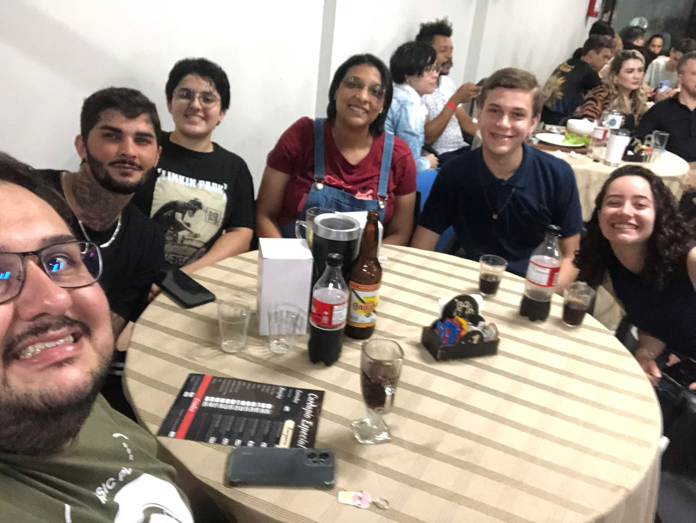

Pint of Science
O Pint of Science é um festival internacional que leva pesquisadores para bares e cafés para compartilhar seu conhecimento de maneira acessível e divertida. Ele ocorre simultaneamente em diversas cidades do Brasil e do mundo.
Edição
Data: 20 de maio de 2025
Local: Viva la Vida